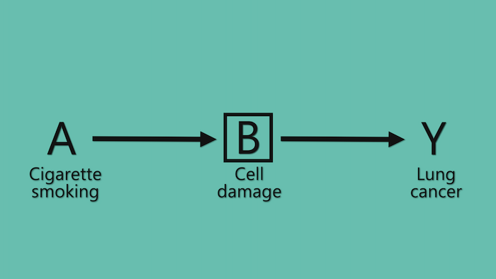

HarvardX PH559x - Causal diagrams: Draw your assumptions before your conclusions
Association vs. causation
What do we mean by causal effect?
Suppose we have a large population of individuals who have cancer and that they are all given a treatment. Suppose 20% of them die.
Suppose we can go back in time and not give them the treatment/give them a placebo. Suppose 50% of them die.
If we could do this then we would have proven that the treatment has, on average, a causal effect (on death) in this population.
Of course we cannot go back in time but what we can do is compare two groups of individuals that are very similar, essentially identical, with respect to their risk of death.
Quantifying causal effects requires the contrast of the same, or very similar/essentially identical, groups of individuals at different levels of treatment.
Formally, we say that causal effects are defined by counterfactual contrasts.
What do we mean by association?
Suppose we have a large population of individuals who have cancer. Some of them received the treatment and some of them do not.
Suppose 30% of the treated die and 10% of the untreated die.
This does not mean that the treatment has a causal effect on death in this population. Perhaps the treatment has no effect but it is given to people who are at a higher risk of death anyway.
We say that treatment and death are associated because the risk of death is different in the treated and the untreated.
Quantifying associations requires the contrast of two groups of individuals at different levels of treatment.
Formally, we say that associations are defined by simple? contrasts.
The association may be present because the treatment has a causal effect or because the groups of individuals are different. Thus there may be association without causation.
We can also say that treatment and death are associated when having information about the treatment status allows us to predict death better, on average.
Causal diagrams/DAGs are very helpful because they represent both association and causation simultaneously! They are both a causal and a statistical (albeit only qualitative) model at the same time.
This dual nature of causal DAGs is based on the fact that a causal effect implies dependence/association and lack of a causal effect implies independence/lack of association.
Directed acyclic graphs (DAGs) as causal diagrams/DAGs
Directed acyclic graphs
Arrows of causal graphs are not meant to be deterministic.
Causal Markov condition
A DAG is causal if the causes shared by any pair of variables on the graph are also on the DAG.
If our expert knowledge is insufficient for us to rule out a direct causal effect of variable A on variable Y, we should draw an arrow from A to Y on the causal DAG.
The building blocks of causal diagrams/DAGs
The pipe
The flow of association between A and Y is interrupted when we condition on the mediator B.
So, if there is no direct arrow from A and Y, there no association between A and Y conditioned on B, even though A has a causal effect on Y.
